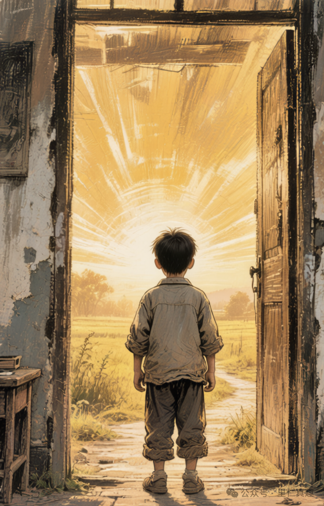

和父母的关系：想赢赢不了，想逃逃不掉。如果你有同感，恭喜你，在生命游戏的第一个关卡中，你遇到卡点了。
找到啦（zhaodaola.top）给我们设计了生命游戏的12个关卡。求知、谋生、婚恋、中年危机……每一关都不容易。但要说最难的，是第一关——原生家庭。
为什么？
因为其他关卡，你多少有选择权。选什么专业、做什么工作、和谁结婚，虽然难，但至少是你自己选的。自己亲手种下的苦果，含着眼泪都要把它吞下去。
唯独原生家庭，你没得选。
你不能选择谁做你的父母，不能选择出生在什么样的家庭，不能选择童年怎么度过。等你有了独立意识，发现自己已经被"设定"了大半——性格、习惯、思维模式、情绪反应方式，很多东西已经刻进骨子里了。
这就是原生家庭的残酷之处：它影响你最深，但你参与度最低。

门内是被设定的过去，门外是你可以选择的方向
这一关，你没得选
以下有12个与原生家庭相关的扎心问题，看看哪些戳中了你：
问题的根子在哪里
父母控制欲太强，吃什么、穿什么、交什么朋友、找什么对象，什么都要管。你想反抗，他们就说"我都是为你好"。你想建立边界，他们就说"翅膀硬了，不孝顺了"。
你陷入两难：顺从，自己憋屈；反抗，背负愧疚。
家里几个孩子，父母明显偏心。被偏爱的那个有恃无恐，被忽视的那个拼命讨好。成年后，被忽视的孩子往往活得很累——骨子里觉得自己不够好，需要不断证明自己值得被爱。
这种伤，表面看不见，但一直在流血。
有些家庭，女儿生来就是"外人"。资源给儿子，责任给女儿。儿子买房父母掏钱，女儿出嫁要收彩礼"补偿"家里。
女儿们很困惑：我到底是这家人，还是外人？
逢年过节，亲戚轮番上阵："有对象了吗？""多大了还不结婚？""你看谁谁谁，孩子都上幼儿园了。"父母更是焦虑："你不结婚，我们在亲戚面前抬不起头。"
你很想说：我的人生，为什么要在意你们的面子？但你说不出口。
这一关为什么这么难？
其他关卡难，但至少"敌人"是明确的——工作压力、经济困难、职场竞争。原生家庭的难，在于它的"敌我关系"是模糊的。
父母再怎么伤害你，他们终究是你的父母。你可以和老板翻脸，可以和朋友绝交，但你没法和父母"断绝关系"。社会不允许，道德不允许，你自己内心也不允许。
所以很多人选择忍。忍到内伤，忍到抑郁，忍到自己也变成了施害者。
中国文化讲"孝"。不管你父母做了什么，只要你稍微表现出不满，就会被扣上"不孝"的帽子。
"天下无不是的父母。""他们再怎么不好，也把你养大了。""你看看别人家的孩子，多孝顺。"这些话像紧箍咒，让你有苦说不出。
你改变不了父母。你试过沟通，他们不听；你试过反抗，他们变本加厉；你试过讨好，他们觉得理所当然。几十年形成的思维模式和行为习惯，不是你几句话能改变的。
最折磨人的是：你恨他们，但你也爱他们。你想逃离，但你又心疼他们。你想断绝关系，但夜深人静时又会想：他们老了怎么办？
这种爱恨交织，才是原生家庭最深的痛。
我们容易深陷的误区
"我要让他们认识到自己的错误。""我要让他们道歉。""我要让他们理解我。"
结果：沟通变成争吵，争吵变成冷战，冷战变成更深的伤害。
真相：你改变不了几十年形成的他们，你只能改变自己。
"我离得远远的，眼不见心不烦。"结果：物理距离有了，但心理上的纠缠还在。你还是会因为他们一个电话情绪崩溃，还是会在深夜想起童年的伤。
真相：逃离是必要的一步，但不是终点。真正的解脱在心里，不在地理距离。
"我做得更好一点，他们就会爱我了。""我考上好大学、找到好工作、嫁个好人家，他们就会以我为荣了。"结果：你做到了，但他们还是不满意。或者他们满意了，但你发现自己已经累垮了。
真相：你不需要通过"足够好"来换取爱。你本身就值得被爱。
"我之所以这样，都是原生家庭的错。""我有今天，都是父母害的。"结果：你把自己困在"受害者"的位置上，永远走不出来。
真相：原生家庭是你的起点，但不是你的终点。你可以选择不让创伤继续。
找到卡点，如何破局
原生家庭这关怎么过？没法给标准答案，因为每个家庭的情况都不一样。但有几个思路，或许对你有用。
别再试图改变父母了。把注意力收回来，放在自己身上。问问自己：我为什么会因为父母的一句话就情绪崩溃？我为什么总是忍不住讨好别人？我为什么对亲密关系既渴望又恐惧？
当你理解了自己，你就不会再被父母的言行轻易触发。这不是认输，是长出铠甲。
边界不是"我不认你这个妈"，而是"我爱你，但有些事情我不能接受"。边界是：你可以关心我，但不能替我做决定。你可以给我建议，但不能要求我必须听。你可以住在我附近，但不能住在我家里。
建立边界很难，会经历一段痛苦的"斗争期"。但只要坚持，父母最终会接受新的相处模式。
中国式孝道的毒在于：它让你觉得，只要不顺从父母，就是不孝。但真正的孝，不是无条件服从，而是彼此尊重。
你可以拒绝父母的无理要求，同时依然爱他们。你可以不按他们的方式生活，同时依然关心他们。允许自己"不孝"，才能真正地孝。
如果你已经有了孩子，最该做的一件事是：觉察。觉察自己是不是在重复父母的模式——你讨厌父母的控制欲，但你是不是也在控制孩子？你讨厌父母的冷漠，但你是不是也很少对孩子表达爱？
觉察是改变的第一步。当你意识到自己正在重复，你就有了选择的机会。
有些伤，注定无法完全愈合。有些遗憾，注定无法弥补。但这不意味着你不能好好活着。
与原生家庭和解，不是原谅父母的过错，而是不再让那些过错定义你的人生。你可以带着伤疤往前走。伤疤是你活过的证明，不是你走不动的理由。
你没法选择起点，但你可以选择方向。
你没法改写过去，但你可以重定义未来。
那些在原生家庭中受过伤的人，我想对你说：
你的痛苦是真实的。那些伤害确实发生过。你不需要假装没事，也不需要强迫自己原谅。
但你值得从那些伤痛中走出来。你值得拥有自己的人生。
不是为了证明给谁看，而是为了你自己。